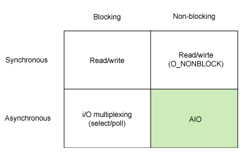

Today I Learned
이해가 잘 안되고, 자주 까먹는 내용을 정리
- 정리
- 설치
Docker
- 한글 문서 모음
- 매번 까먹는 명령
- Docker 데몬 띄우기
$ docker-machine start $ docker-machine ssh default- Docker 이미지 시작
$ docker start $ContainerID $ docker attach $ContainerID- Docker 추가
$ docker run -i -t --name new_centos centos /bin/bash- Docker Rename
$ docker rename OLD_NAME NEW_NAME
Git
- Pull request
- master 계정이 아닌 다른 계정으로 login 하여 수행
git branch pr_test
git checkout pr_test
git commit Array.java
git push origin pr_test
- branch에서 origin merge 하기
git merge origin/master
Gof Design Patterns
-
Gang of Four 23 design patterns
- Creational Patterns : 생성 패턴
- Abstract Factory
- Builder
- Factory Method
- Prototype
- Singleton
- Structural Patterns : 구조 패턴
- Adapter
- Bridge
- Composite
- Decorator
- Facade
- Flyweight
- Proxy
- Behavioral Patterns : 행위 패턴
- Chain of Responsibility
- Command
- Interpreter
- Iterator
- Mediator
- Memento
- Observer
- State
- Strategy
- Template Method
- Visitor
- Creational Patterns : 생성 패턴
Git Page
-
페이지 생성 (pages.github.com)
-
테마 설정 (jekyll 사용)
- 설치 중 ERROR
An error occurred while installing nokogiri (1.6.8), and Bundler cannot continue.
Make sure that `gem install nokogiri -v '1.6.8'` succeeds before bundling.
- nokogiri 설명 확인 후 해결
bundle config build.nokogiri --use-system-libraries
bundle install
Java Install
- pinpoint 해보려다가 Java 6,7,8 모두 필요해서 설치하게 됨 (설치 참고)
- JAVA 7 예시, centos라서 yum 사용
- JRE install
sudo yum install java-1.7.0-openjdk- JDK install
sudo yum install java-1.7.0-openjdk-devel- java version 선택 명령어
update-alternatives --config java- java 환경 설정 확인
java -XshowSettings:properties version
Command
- 전체 명령어 확인 (Unix & Linux Forums)
- 명령어 사용 예시
- tmux (tmux)
- ctrl + b 누르고
손을 떼고나서다음 옵션키를 누르는 걸 몰라서 엄청 해맴 ㅜ.ㅜ
- ctrl + b 누르고
- useradd 사용자 추가 (useradd 만으로 되긴함…)
// Centos
useradd -d /home/tf -u 1002 -s /bin/csh tf
passwd tf
// Ubuntu
useradd nfv -m -s /bin/csh // chsh로 shell 변경 가능
passwd nfv
- snmpwalk 정보 가져오기
# Linux
snmpwalk 201.10.3.152:40101 -v 2c -c public .1.3.6.1.4.1.11065.10000.1.2.2
snmpwalk 201.10.3.191:35300 -v 2c -c public .1.3.6.1.4.1.11065.10030.1.2.2
# Solaris
snmpwalk -v 2c -c public -m ALL 114.207.73.213:35023 .1.3.6.1.4.1.11065.10038.1.2.1
snmpwalk 114.207.73.213:35023 -v 2 -c public 1.3.6.1.4.1.11065.10038.1.2.3
- strace 명령으로 쓰레드 구분해서 파일에 덤프
strace -p[PID] -ttTf -o [file name]
- Make 수행 후 error, warning 파일에 redirection 하기 (stack overflow 참고)
make | & tee output.txt
- date 시간 변경하기
[Ubuntu]
# dpkg-reconfigure tzdata
[Centos, Redhat]
# ln -sf /usr/share/zoneinfo/Asia/Seoul /etc/localtime
- sudoer 추가하기
[Centos]
# vi /etc/sudoers
## Allow root to run any commands anywhere
root ALL=(ALL) ALL
jeon ALL=(ALL) ALL ; <-- 추가
Find
- 비어있는 디렉토리 찾기
find . -empty -type d
- 100MB 이상 크기 파일 찾기
find . -type f -size +100M -exec ls -alh {} \;
- 파일이 100개 이상인 디렉토리 찾기
find / -type f | sed 's,/[^/]*$,,' |sort |uniq -c | awk '$1>=100'
PS
- Linux System Memory 사용률 확인
ps aux | awk '{print $1,$2,$4,$11}' | sort -k 3 -nr | head -n 10
LS
- 현재 디렉토리 전체 파일 사이즈 확인
ls -lh | head -1
AWK
/var/log/message(centos)에서 1분마다 이벤트 발생 횟수 가져오기
awk -F: {'print $1 ":" $2'} messages
Markdown
- Cheatsheet
- 1 페이지 안에서 링크 생성하기 (stack overflow 참고)
Go to section
* [Hello](#hello)
* [Hello World](#hello-world)
* [Another section](#new-section) <-- 'Another section' but refers to 'New section'
## Hello
### Hello World
## New section
- 이미지에 대한 캡션 삽입 (stack overflow 참고)
<p>
<img src="path_to_image" alt>
<em>image_caption</em>
</p>
아니면
<p>
<img src="path_to_image" alt>
</p>
<p>
<em>image_caption</em>
</p>
Java
- static 키워드 (tistory blog)
- 안 바뀜 -> 공통 사용 -> 메모리 절약
- JVM
- JVM, JRE, JDK 차이
- Java Virtual Machine
- Java Runtime Environment
- Java Development Kit
- 자바 환경 설정 확인 명령어
java -XshowSettings:properties -version
Input Output
Linux models

Non Blocking Algorithm
-
- Wait-Free
- 가장 이상적인 수준
- 전체 쓰레드가 공유 자원을 일관적으로 사용하면서 대기 없이 진행
- Lock-Free
- 일반적인 수준
- 항상 하나 이상의 자원이 유한한 단계에 획득하고 사용을 끝냄
- 어떤 쓰레드가 자원을 획득할지 결정적이지 않음
- CPU starvation을 완전히 극복할 수는 없음
- Obstruction-Free
- 가장 낮은 수준
- 충돌중인 쓰레드를 멈추게해야한다는 점에서 Blocking에 가까움
- 한개를 제외하고 다른 모든 쓰레드를 대기시킴
- 자원을 획득한 쓰레드가 사용을 끝냄
- Wait-Free
Tcp ip
OSI layers
- 계층 7 구성
| No. | 계층 | 프로토콜 |
|---|---|---|
| 7 | 응용 | NNTP, SIP, SSI, DNS, FTP, 고퍼, HTTP, NFS, NTP, SMPP, SMTP, DHCP, SNMP, Telnet, 더보기 |
| 6 | 표현 | MIME, XDR, TLS, SSL |
| 5 | 세션 | 지명파이프, 넷바이오스, SAP |
| 4 | 전송 | TCP, UDP, SCTP, DCCP |
| 3 | 네트워크 | IP, ICMP, IPsec, IGMP, IPX, 애플토크 |
| 2 | 데이터 링크 | ARP, CSLIP, SLIP, 이더넷, 프레임릴레이, PPP, PPTP, L2TP, ITU-T G.hn DLL |
| 1 | 물리 | RS-232, RS-485, DSL, 802.11a/b/g/n PHY, USB, Bluetooth |
Subnet
-
subnetwork을 줄인 말로서 어떤 기관에 소속된 네트웍이지만 따로 분리되어 있는 한 부분으로 인식될 수 있는 네트웍을 말한다. 일반적으로 하나의 서브넷은 하나의 지역, 한 빌딩 또는 같은 근거리통신망 내에 있는 모든 컴퓨터들을 나타낼 수 있다. 여러 개의 서브넷으로 나뉘어진 어떤 조직의 네트웍은 인터넷에 하나의 공유된 네트웍 주소로 접속될 수 있다. 만약 서브넷이 없다면, 그 조직은 물리적으로 분리된 서브 네트웍마다 하나씩, 여러 군데의 인터넷 접속을 가지게 될 것이며, 그렇게 함으로써 한정된 량의 인터넷 주소가 쓸모 없이 낭비될 수도 있게된다.(텀즈)
- Subnet Mask netmanias 참고
Packet Travel
- L3 스위치의 패킷 전달 로직 (netmanias 참고, stack overflow 참고)
Database
MySQL
- 쿼리
- vertical mode (쿼리 결과를 세로로 보고 싶을 때, 1개의 row만 상세히 보고 싶을 때)
% mysql -uroot -pasdfsdf --vertical
mysql> select * from test;
MySQL Query
- 테이블이 사용하고 있는 data 크기 및 engine 정보 가져오기 (stack overflow 참고)
SELECT
table_name AS `Table`,
round(((data_length + index_length) / 1024 / 1024), 2) `Size in MB`,
engine
FROM information_schema.TABLES
WHERE table_schema ="$TABLE_NAME";
*.csv엑셀파일 import (stack overflow 참고)
% mysql --local-infile -uMY_USER -pMY_PASSWORD
...
mysql> use MY_DATABASE
...
mysql> LOAD DATA LOCAL INFILE '/Users/test-u/Downloads/test4.csv' INTO TABLE CHECK_RSC FIELDS TERMINATED BY ',';
Query OK, 2546 rows affected, 21421 warnings (0.12 sec)
Records: 2546 Deleted: 0 Skipped: 0 Warnings: 21421
- 현재 실행 중인 쿼리 조회 (stack overflow 참고)
mysql> SHOW FULL PROCESSLIST;
Pylucene Install
- Apache Lucene에서 시키는 대로 하면 됨 (pylucene-4.10.1-1)
- JCC 사용
- 설치 시 주의 사항
- JAVA_HOME 설정 확인
pylucene-4.10.1-1/Makefile직접 주석을 풀어줘야함.
Cacti Install
- 설치 OS(Red Hat Enterprise Linux Server release 7.2)
[1] Install apache
sudo yum install httpd httpd-devel -y
[2] Install Mysql
sudo yum install mysql mysql-server -y
sudo yum install mariadb-server -y
[3] Install PHP
sudo yum install php-mysql php-pear php-common php-gd php-devel php php-mbstring php-cli -y
[4] Install PHP-SNMP
[FAILED]
sudo yum install php-snmp -y
[5] Install NET-SNMP
sudo yum install net-snmp-utils net-snmp-libs -y
sudo yum install net-snmp -y
[6] Install RRDTool
sudo yum install rrdtool -y
[7] start daemon
sudo systemctl start httpd
sudo systemctl start mariadb.service
sudo systemctl start snmpd
[8] install cacti download tar.gz from http://www.cacti.net/download_cacti.php
tar xzvf cacti-version.tar.gz
mysql root password setting create db table
-> MariaDB [cacti]> source /home/ec2-user/cacti-0.8.8h/cacti.sql
mysql> GRANT ALL ON cacti.* TO cactiuser@localhost IDENTIFIED BY 'somepassword';
mysql> flush privileges;
[9] Edit include/config.php
$database_type = "mysql";
$database_default = "cacti";
$database_hostname = "localhost";
$database_username = "cactiuser"; # mysql login ID
$database_password = "cacti"; # PW
[10] crontab에 등록하여 rra 생성
압축 해제한 cacti-xxx 를 /var/www/html/cacti로 이동하고 crontab 등록한다.
sudo crontab -e
*/5 * * * * php /var/www/html/cacti/poller.php > /dev/null 2>&1
[11] website 접속 http://ec2-52-78-100-183.ap-northeast-2.compute.amazonaws.com/cacti
Zabbix Install
- 설치 OS(Amazon EC2 redhat)
- 참고
[1] RHEL/CentOS EPEL 설치
[2] repository configuration package 설치
# rpm -ivh http://repo.zabbix.com/zabbix/3.0/rhel/7/x86_64/zabbix-release-3.0-1.el7.noarch.rpm
[3] Zabbix 패키지 설치
sudo yum -y install yum-utils
sudo yum repolist all
sudo yum-config-manager --enable rhui-REGION-rhel-server-extras rhui-REGION-rhel-server-optional
sudo yum install zabbix-server-mysql zabbix-web-mysql
sudo yum install zabbix-agent
[4] MYSQL Database 세팅
mysql -uroot -p<password>
mysql> create database zabbix character set utf8 collate utf8_bin;
mysql> grant all privileges on zabbix.* to zabbix@localhost identified by '<password>';
mysql> quit;
sudo cd /usr/share/doc/zabbix-server-mysql-3.0.4
zcat create.sql.gz | mysql -uroot -p$PASSWORD zabbix
[5] Zabbix 기본 세팅 및 시작
sudo vi /etc/zabbix/zabbix_server.conf
DBHost=localhost
DBName=zabbix
DBUser=zabbix
DBPassword=zabbix
Start Zabbix server process.
sudo systemctl start zabbix-server
[6] /etc/httpd/conf.d/zabbix.conf 설정 확인 후 httpd 재기동
sudo systemctl stop httpd
sudo systemctl start httpd
[7] web page 접속
example) http://$IP/zabbix
http://ec2-52-xx-xxx-149.ap-northeast-2.compute.amazonaws.com/zabbix
Eclim Install
[1] java 8 install
sudo add-apt-repository ppa:webupd8team/java -y
sudo apt-get update
sudo apt-get install oracle-java8-installer
[2] vim install (sudo apt-get install vim)
[3] eclipse install
- Download
- eclipse-jee-neon-R-linux-gtk-x86_64.tar.gz
- eclim_2.6.0.jar
$ tar xvf eclipse-jee-neon-R-linux-gtk-x86_64.tar.gz -C ~
$ java \
-Dvim.files=$HOME/.vim \
-Declipse.home=$HOME/eclipse \
-jar eclim_2.6.0.jar install
$ sudo apt-get install xvfb build-essential
$ sudo apt-get install libswt-gtk-3-jni libswt-gtk-3-java
ERROR 발생.
eclim java.lang.NoClassDefFoundError: org/eclipse/ui/PlatformUI
아래의 순서로 실행해야함
$ Xvfb :1 -screen 0 1024x768x24 &
$ DISPLAY=:1 ~/eclipse/eclimd -b
Simple Install
- Chef
curl https://omnitruck.chef.io/install.sh | sudo bash -s -- -P chefdk -c stable -v 0.16.28
- oh-my-zsh
sh -c "$(curl -fsSL https://raw.githubusercontent.com/robbyrussell/oh-my-zsh/master/tools/install.sh)"
- 각종 plug-in 설치하기 쉬운 vim-plug 설치(멋지다.. vim 신)
curl -fLo ~/.vim/autoload/plug.vim --create-dirs \
https://raw.githubusercontent.com/junegunn/vim-plug/master/plug.vim
- RHEL/CentOS EPEL 설치
MariaDB Install
$ cat /etc/redhat-release
Red Hat Enterprise Linux Server release 7.2 (Maipo)
$ sudo yum install mariadb-server.x86_64 mariadb-devel.x86_64 -y
...
$ sudo systemctl enable mariadb
Created symlink from /etc/systemd/system/multi-user.target.wants/mariadb.service to /usr/lib/systemd/system/mariadb.service.
$ sudo systemctl start mariadb
$ sudo mysql_secure_installation
; All answer 'yes'
done
Issues
- lsof 결과와 /proc/sys/fs/file-nr의 fd 개수가 다르다.
- 이유는 lsof에는 Process ID에 대한 정보만 나와서. Thread에 대한 정보 없음. (serverfault 참고)
- 레거시 코드를 cc에서 gcc로 컴파일 할 때
GCC: array type has incomplete element type발생 (stack overflow 참고)array[]배열의 사이즈를 명시하지 않은 경우*array로 선언
Basic Programming
정말 기본 ㅜ.ㅜ
- 변수 type
- 다차원 배열
int array[2][3] = {
{1,2,3},
{4,5,6}
}
int array[2][3][4] =
{
{
{1, 2, 3, 4},
{5, 6, 7, 8},
{9, 10, 11, 12}
},
{
{51, 52, 53, 54},
{55, 56, 57, 58},
{59, 60, 61, 62}
}
};
Variable Type
<climits> (limits.h)c++ reference- 부동 소수점 수 (MSDN 설명)
- float의 가수길이 23bit은 unisigned라고 가정하면
8,388,608이고7자리도 다 못 보여줌
- float의 가수길이 23bit은 unisigned라고 가정하면
| 형식 | 유효 자릿수 | 바이트 수 | 지수 길이 | 가수 길이 |
|---|---|---|---|---|
| float | 6 ~ 7 | 4 | 8 bit | 23 bit |
| double | 15 ~ 16 | 8 | 11 bit | 52 bit |
동적언어 / 정적언어
| _ | 정적언어 | 동적언어 |
|---|---|---|
| 자료형(Type) | 고정, type casting 사용 변수 선언 할 때, 타입 명시 |
함수 or 매서드에 따라 그때그때 바뀜 |
| Type 결정 | 컴파일 시 | 런타임 시 |